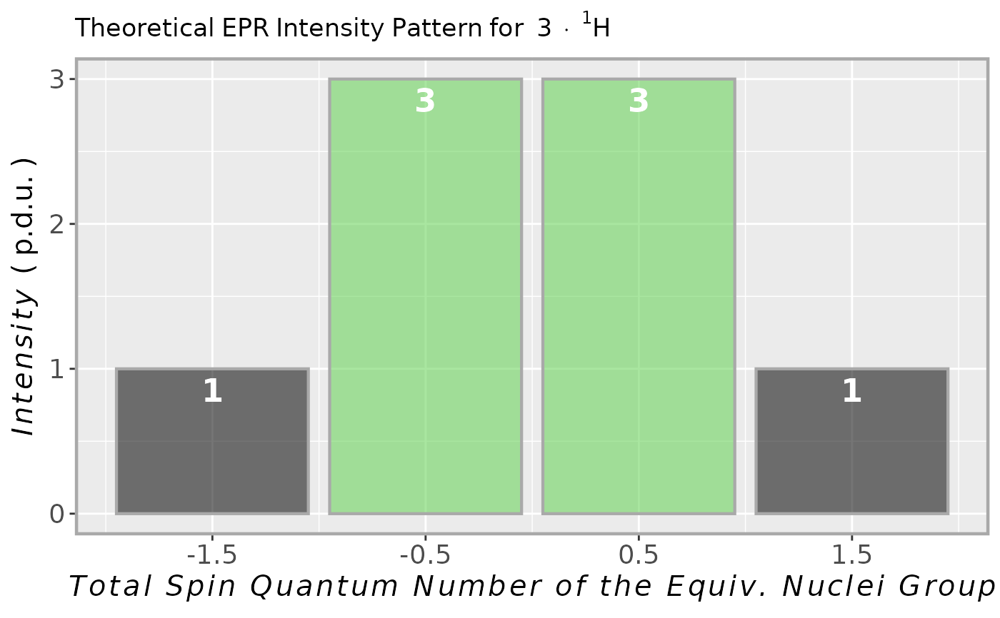
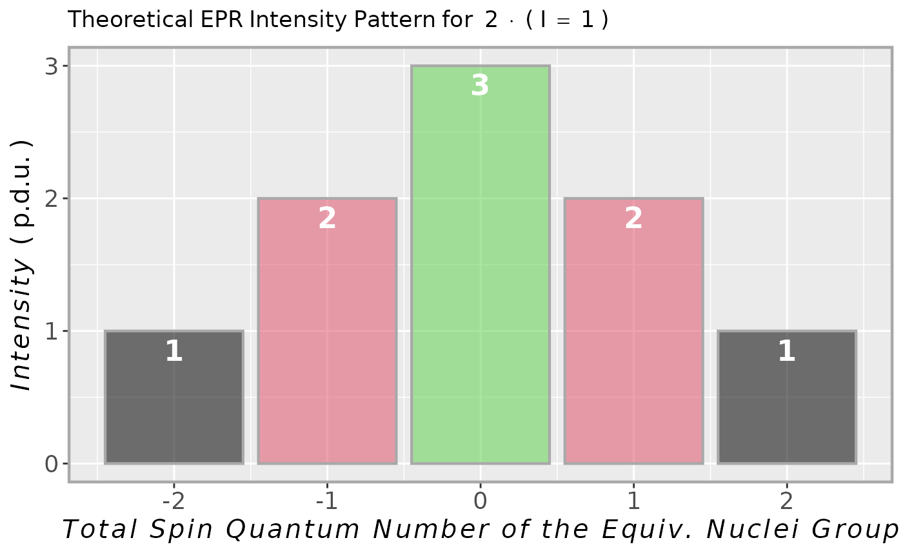

EPR Intensity Multiplet Prediction for Interactions of Electron with Selected Nucleus/Nuclei
Source:R/plot_eval_EPRtheo_mltiplet.R
plot_eval_EPRtheo_mltiplet.RdWhat is the expected EPR intensity pattern for a group of equivalent nuclei? One may use this function for a quick
prediction/visualization of EPR spectrum multiplets (without a specific hyperfine splitting). Its central code
(computation of binomial/multinomial coefficients) is implemented in the eval_sim_EPR_iso to provide
simulations of isotropic EPR spectra. The theoretical intensities/coefficients are returned either as a vector
or as a barplot using the geom_bar.
Arguments
- nucle_us_i
Character string, pointing to specific nucleus/nuclei in the form like
"14N"or"2H". Ifnucle_us_i = "1H", i.e. interaction with proton(s) is considered as default one. Based on the string, the characteristic nuclear spin quantum numberIis taken from theisotopes_dsdataset. If one wants to defineIin a more general way, just put thenucle_us_i = NULLand define the desiredIby the corresponding argument (see below).- I
Numeric value, pointing to nuclear spin quantum number of proposed nucleus/nuclei interacting with unpaired electron.
Imust be specified in the form likeI = 0.5(for spin 1/2),I = 1.5(for spin 3/2) orI = 1. The default value,I = NULL, is applied only in such case when theIis defined via thenucle_us_iargument (see above).- N.nuclei
Numeric value (integer), corresponding to number of interacting equivalent nuclei (within a group). Default:
N.nuclei = 1.
Value
A list consisting of:
- intensity.vec
A named vector of binomial/multinomial coefficients related to theoretical intensities of isotropic EPR spectrum when the coupling between unpaired electron and the surrounding nuclei is present. Coefficient/Vector names correspond to total spin quantum numbers (e.g. for one
"14N"nucleus, the names are represented by thec("-1","0","1")vector).- plot
GGplot2 object/list as a graphical representation of the
intensity.veclist component.
See also
Other Simulations and Optimization:
eval_ABIC_forFit(),
eval_sim_EPR_iso(),
eval_sim_EPR_isoFit(),
eval_sim_EPR_isoFit_space(),
eval_sim_EPR_iso_combo(),
optim_for_EPR_fitness(),
plot_eval_RA_forFit(),
quantify_EPR_Sim_series(),
smooth_EPR_Spec_by_npreg()
Examples
## intensity multiplet for methyl group
## (3 x 1H equivalent nuclei)
methyl.multipl <-
plot_eval_EPRtheo_mltiplet(
N.nuclei = 3
)
#
## vector of predicted
## intensities/coefficients
methyl.multipl$intensity.vec
#> -1.5 -0.5 0.5 1.5
#> 1 3 3 1
#
## graphical repsentation
methyl.multipl$plot

#
## intensity multiplet for 2 x 14N
## in TMPD (Wuster's blue) radical cation
tmpd.14N.multipl <-
plot_eval_EPRtheo_mltiplet(
I = 1,
N.nuclei = 2
)
#
tmpd.14N.multipl$plot
